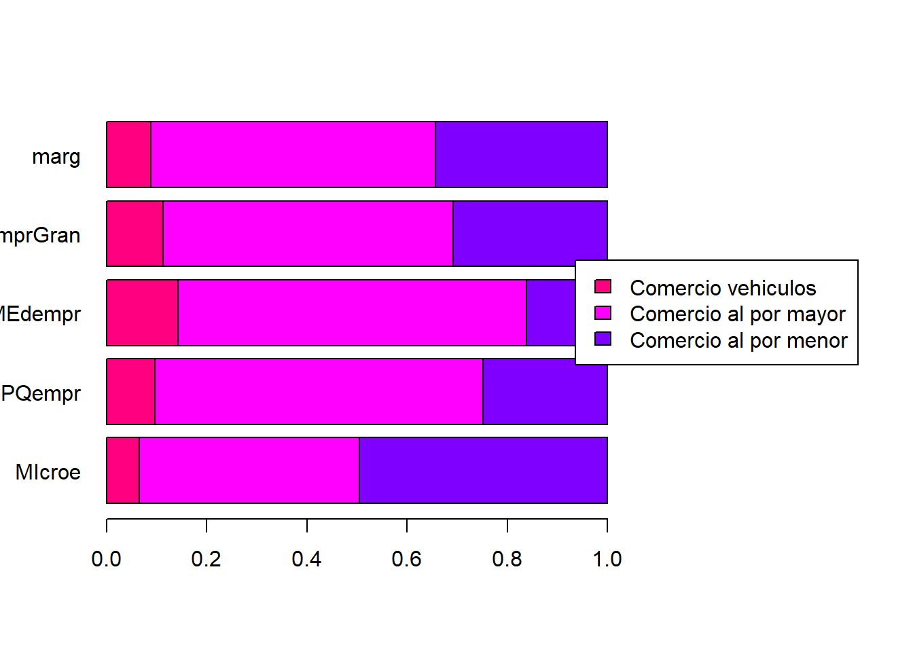
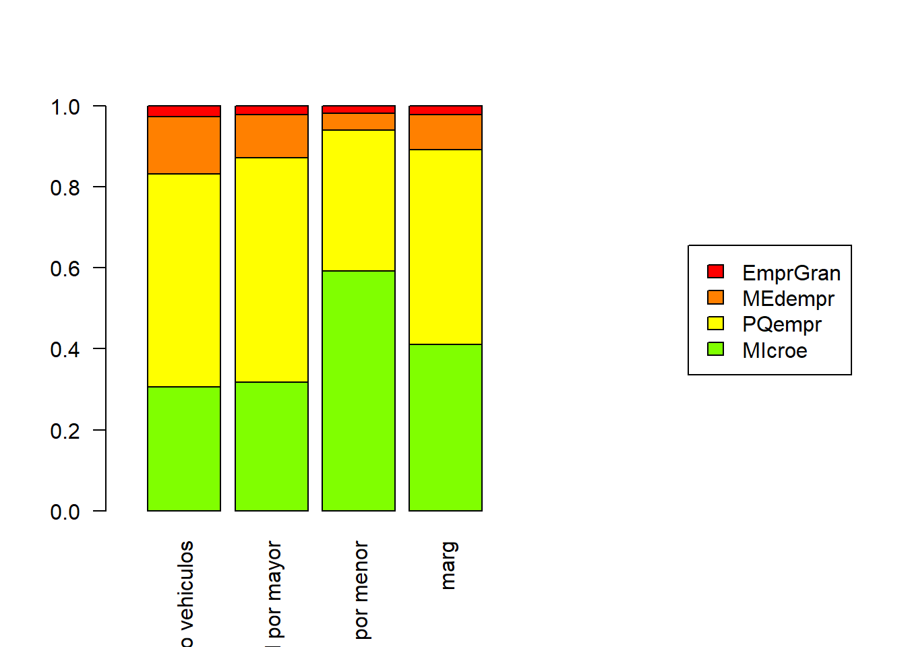
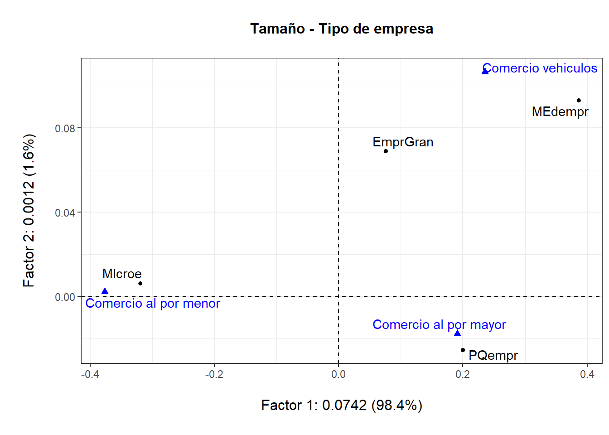
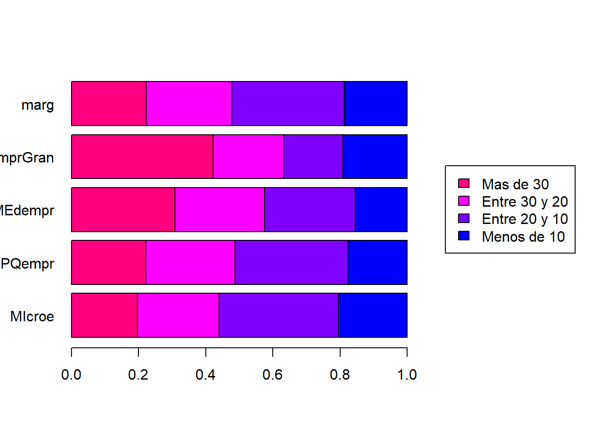
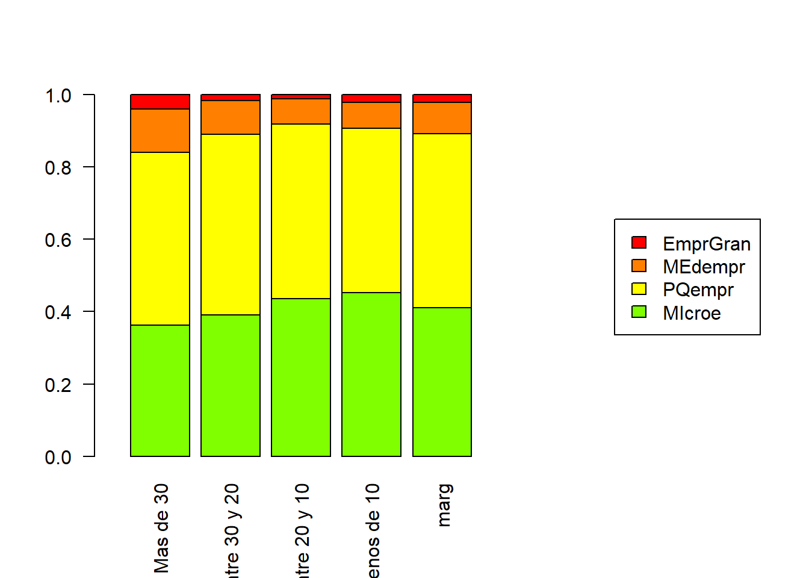
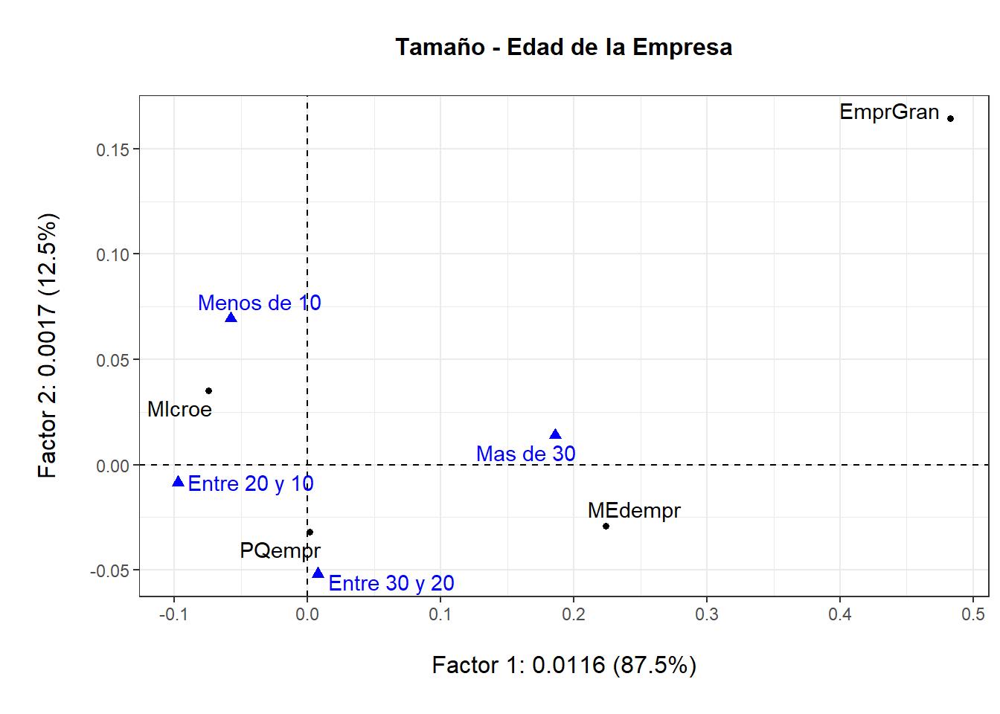
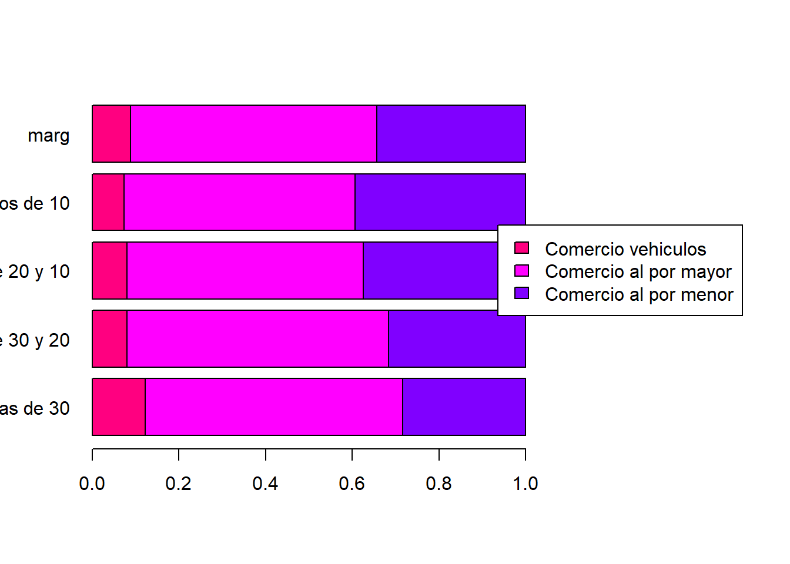
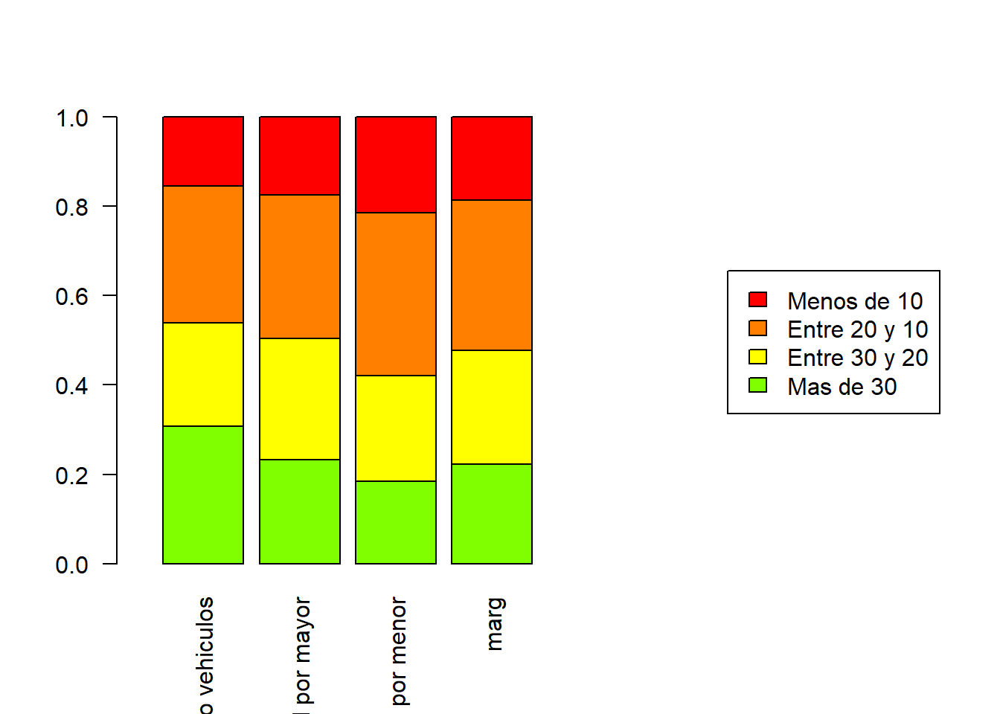
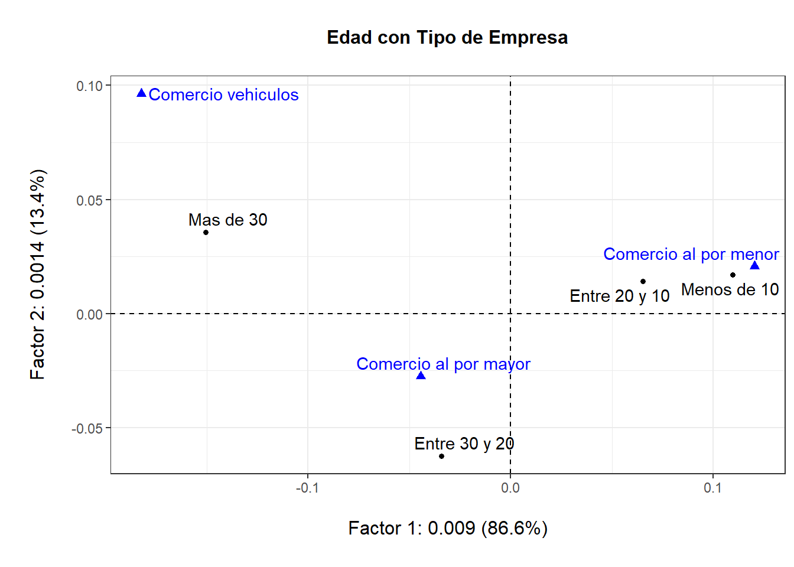

| Comercio vehiculos | Comercio al por mayor | Comercio al por menor | |
|---|---|---|---|
| MIcroe | 2.695 | 18.07 | 20.33 |
| PQempr | 4.636 | 31.52 | 11.91 |
| MEdempr | 1.249 | 6.07 | 1.41 |
| EmprGran | 0.237 | 1.22 | 0.65 |
Análisis de Correspondencias Simples
Dado que la variable BRUTA demostró ser la más importante en el ACP, decicimos dos hacer comparaciones entre esta, usando la clasificación de Tamaño por empresas según sus ingresos brutos. Las variables que elegimos son las siguientes. - Tipo de Empresa - Edad de la Empresa
Tambien, para complementar la segunda realizamos una comparación entre Edad de la Empresa y Tipo de Empresa.
¿Por qué no combinar categorías empresas grandes y medianas?
En los siguientes tres análisis se notará que no pegamos empresas grandes y medianas así el conteo relativo tan bajo de empresas de gran tamaño pueda afectar los ACS. Esto con el motivo de que en Colombia ambos grupos suelen ser tratados por separado; es común ver en el debate político, en informes económicos, y demás el uso del término PYMEs (Pequeñas y Medianas Empresas). Además al estar soportándonos de ayudas de interpretación y revisando constantemente que el conteo relativo no sea menor al 0.1%, consideramos que podemos mantener la calidad de los análisis sin hacer mayores cambios.
Tamaño con Tipo de Empresa
ACS entre las variables Tamaño (cuatro categorías) y CIIU (tres categorías).
Objetivos
Queremos analizar la pertenencia a un sector comercial con el tamaño de las empresas. Al ser CIIU cuantitativa esto no sería posible en ACP. Además vemos útil poder conocer la composición de cada mercado censado en la EAC.
De esta manera, primero notemos que no va a ser posible usar la clasificación completa de CIIU debido al bajo conteo de frecuencias relativas que podrán dañar el ACS:
Así, decidimos aplicar la siguiente reclasificación:
Nos quedan la siguientes tablas:
Así se muestre una categoría de conteo bajo en empresas grandes, se mantiene coherente realizar el análisis.
Perfiles Fila y Columna
Como ayudas a la futura interpretación mostramos ambas tablas de perfiles:
Perfil Fila (Tamaño)
|

Perfil Columna (Tipo)
|

Resultados
Ahora se realiza el ACS tomando en cuenta todas las categorías (así sea riesgoso tomar EmprGran: Empresas Grandes, se mostró en un ACS previo que no hay grandes diferencias en los resultados al tomarla o no):

Así se pueden encontrar relaciones cuasi-baricéntricas entre la distribucion que siguen los comercios.
Conclusiones
Analizando el gráfico y las ayudas de interpretación, se llega a las siguientes conclusiones:
El comercio al por menor, según el ACS, está muy ligado a la microempresa; se puede ver en el gráfico de columnas es el que más se diferencia a la distribución marginal. Nótese que va mucho más relacionado al área de la microempresa, donde esta es más de la mitad.
EL ACS tambien señala relación entre pequeña empresa y comercio al por mayor, pero nótese que en el gráfico marginal columnas no hay una marcada diferencia entre la cantidad marginal de pequeña empresa con la cantidad al por mayor, cuando en cambio si hay una diferencia mas marcada en la microempresa.
A su vez, el ACS señala una relación, menos marcada, entre comercio de vehiculos y empresas grandes o medianas. Si analizamos el gráfico marginal de filas, se notará que ambos tamaños de empresas son mayores al “promedio”, pero es con la mediana empresa que se muestra una relación marcada; en cambio con la empresa grande esta relación no se diferencia particularmente de la marginal y es similar a la distribución de empresas pequeñas orientadas al comercio de vehículos.
Se podría concluir a partir de la discribución de la microempresa, al ser de por sí conocida por no tener comúnmente los recursos para hacer inversiones de alto calibre, que el mercado vehicular implica tener una cantidad de activos considerable.
Tambien hay que resaltar la baja tendencia de empresas medianas y pequeñas a enfocarse en mercados al por menor; aunque es entendible, dado que comúnmente en colombia no encontramos un intermedio entre grandes cadenas de víveres al por menor, con tiendas de barrio enfocadas en el mismo mercado.
Tamaño con Edad
ACS entre las variables Tamaño (cuatro categorías) y Edad (seis categorías).
Objetivo
Verificar si el tamaño de las de empresas va relacionado con su edad. Este es particularmente importante dado que no consideramos que fuera viable tomar la edad como variable continua. Tambien queremos darnos una idea de qué forma se encuentran agrupadas las edades segun el tamaño de las empresas; así verificar si existen indicios de relaciones o no. A la vez queremos complementar este análisis con el siguiente, donde se comparan Edad y Tipo de Empresa; así para darnos una idea de qué sectores pueden darle a sus empresas la posibilidad de crecer según el tiempo.
Se ve que nuevamente hay un muy bajo conteo de empresas grandes. Lo que seguramente será un problema dada la importancia que tendrán los datos, de todas formas al tenerse las ayudas de interpretación y los conteos no ser tan lejanos de un 1%, se tendrá en cuenta la variable.
Perfiles Fila y Columna
Como ayudas a la futura interpretación mostramos ambas tablas de perfiles:
Perfil Fila (Tamaño)
|

Perfil Columna (Edad)
|

Resultados
Ahora se realiza el ACS tomando en cuenta todas las categorías. A pesar del bajo conteo de empresas grandes, consideramos que varias relaciones se podrán ver, como en el ACS anterior, medante el gráfico de proyecciones y una revisión sobre las ayudas de interpretación. El gráfico contiene más del 99% de la inercia.

Conclusiones
Se puede ver una relación entre microempresas o empresas pequeñas y edades menores o iguales a 20 años. Nótese que si tomamos en cuenta ambas, en el conteo de microempresas, efectivamente en el gráfico marginal se divisa esta distribución; aunque cabe a resaltar que este tamaño de empresa es casi igual al promedio. Es entendible dado a que el conteo de microempresas y empresas pequeñas corresponde a aproximadamente el 90% de todas las empresas censadas.
Las empresas grandes en el gráfico de proyecciones se muestran con una longitud alta; esto es entendible dado el bajo conteo de las empresas. De todas formas están en una dirección parecida a las empresas de 30 o más años de existencia; revisando el gráfico de filas, se puede comprender este comportamiento; debido a que las empresas grandes se diferencian de la distribución marginal particularmente en la categoría de 30 años.
Se puede apreciar en el ACS que la distancia entre empresas de 10 a 20 años aumenta según eñ tamaño que tengan. Este comportamiento se confirma en la tabla de filas; tambien se muestra un comportamiento similar según las empresas con 30 o más años. Es interesante que este comportamiento no lo siguen las clasificaciones de “Menos de 10” y “Entre 20 y 30”. De esta manera, se podría suponer una relación a revisar entre las primeras dos clasificaciones de edades.
Edad con Tipo de Empresa
ACS entre las variables Edad de la Empresa (cuatro categorías) y Tipo de Empresa (tres categorías).
Objetivos
Para complementar el análisis anterior, realizaremos la comparación entre estas dos variables; para así dar comentarios complementarios con los hallazgos encontrados; particularmente buscamos encontrar información sobre las categorías de edad “Más de 30 años” y “Entre 10 y 20 años”.
Nótese
Perfiles Fila y Columna
Como ayudas a la futura interpretación mostramos ambas tablas de perfiles:
Perfil Fila (Tamaño)
|

Perfil Columna (Edad)
|

Resultados
Mostradas las gráficas, a continuación mostramos el gráfico de ACS; que contiene más del 99% de la información.

Conclusiones
Se muestra que en la dirección de comercio al por menor se arrastran particularmente las categorías de empresas con menos de 10 años; seguidas de las de entre 20 y 10 años que se ven menos relacionadas y pueden estar mas distribuidas al comercio al por mayor; este último poco correlacionado al Eje 1. Se puede confirmar en la gráfica de columnas que las empresas de menos de 10 años se diferencian ligeramente de la media.
Tambien se puede notar, que el comercio al por menor se aleja según la categoría jerárquica de edad; esto se confirma en la gráfica de filas donde se muestra que las empresas, mientras mayor edad tengan, menos tienden a manejarse en mercados al por menor. De todas formas este comportamiento parece ser difícil de confirmar debido a la reducción de conteo de empresas según su edad.
Se podría decir que estas tres clasificaciones se muestran bastante homogéneas segun la edad (no hay relación entre la edad de una empresa y el mercado donde se desarrolle) debido a que, así las empresas al por menor se distribuyan principalmente entre “Menos de 10” y “Entre 20 y 10”, es de notarse la longitud de la proyección y particularmente que este comportamiento no se presenta tan fuerte en demás secciones del gráfico. Tambien revisando la gráfica de columnas se ve que no se diferencian tanto como se esperaría al verse una relación entre ambas.
Conclusiones Generales
Se podría decir que en Colombia todos los comercios tienen una gran variedad de inversiones en creación de empresa, donde las de gran tamaño no suelen irse a empresas de comercio al por menor; esto en cierta forma podría explicarse con que ya de por sí en el país contamos con una gran variedad de empresas grandes de este tipo, así podría ser considerado en estudios de mercado como un tipo de comercio al que es bastante complicado de adentrarse con inversiones grandes, tal vez al punto de declarársele monopolio.
Las empresas más jóvenes (menos de 10 años) se inclinan hacia el comercio al por menor, mientras que las más antiguas (más de 20 años) tienden hacia el comercio al por mayor. Sin embargo, las diferencias en la distribución de empresas según su edad no son tan pronunciadas.
Las microempresas tienen una fuerte relación con el comercio al por menor, destacándose en la distribución marginal, mientras que las pequeñas empresas no muestran una variación significativa en este aspecto.
El comercio de vehículos está más vinculado a empresas medianas que a grandes, y estas últimas no se diferencian notablemente de la distribución promedio en este sector.
El mercado vehicular requiere recursos considerables, lo que explica la baja participación de microempresas en este mercado.
Existe una relación entre empresas de entre 10 y 20 años y su tamaño, especialmente en las microempresas y pequeñas empresas, que representan alrededor del 90% de todas las empresas censadas.
Las empresas medianas y pequeñas muestran una baja tendencia a operar en mercados al por menor, lo cual refleja una estructura empresarial en Colombia donde predominan grandes cadenas y tiendas de barrio.